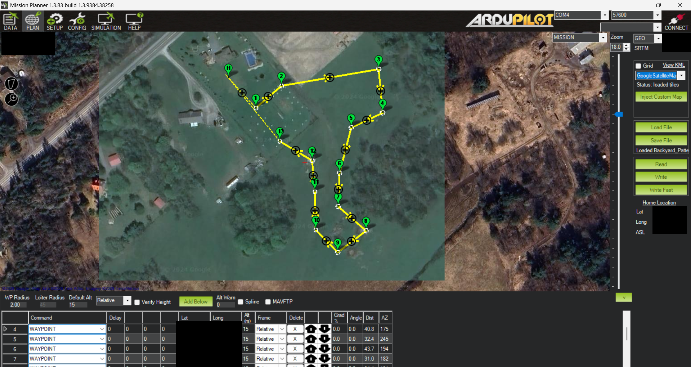

█████╗ ██╗ ██╗████████╗ ██████╗
██╔══██╗██║ ██║╚══██╔══╝██╔═══██╗
███████║██║ ██║ ██║ ██║ ██║
██╔══██║██║ ██║ ██║ ██║ ██║
██║ ██║╚██████╔╝ ██║ ╚██████╔╝
╚═╝ ╚═╝ ╚═════╝ ╚═╝ ╚═════╝
Custom Quadcopter
The platform is powered by ArduPilot for flight control and ExpressLRS for radio link. Built on an F450 frame, it emphasizes modularity, reliability, and clean cable management for long-duration flights and easy maintenance.
Design
The entire electronics stack is mounted using fully custom 3D-printed parts to allow for mounting of various technically incompatible components. This allowed me a wider range of options for components that could improve functionality, as well as reduce cost.

Custom 3D-Printed Parts
Antenna Mount
Holds the ExpressLRS antenna securely with strain relief and optimal orientation for maximum signal range.
Printables • Rev BBattery Mount
Front battery holder with quick-release strap system and integrated XT60 pass-through for clean power routing.
Printables • Rev BFlight Controller Mount
Cube Orange carrier with vibration isolation and precise alignment for the carrier board.
Printables • Rev CGPS Mount
Here 3 GPS module mount with compass protection and clean sky visibility.
Printables • Rev BSoftware & Avionics
• Flight Controller Firmware: ArduPilot (Copter) — full autonomous capabilities including RTL, Loiter, and Auto missions.
• Radio Link: ExpressLRS 2.4 GHz with dynamic power and telemetry feedback to a RadioMaster Boxer controller.
• Ground Control: Mission Planner for configuration, tuning, and real-time telemetry stream to the quadcopter.
Flight Configuration & Ground Station
The ground station is set up with Mission Planner running on my laptop, connected to the quadcopter via two USB telemetry radios. This transmits real-time information about the quadcopter's position, speed, altitude, battery status, and ExpressLRS link quality.
The quadcopter is configured to mainly be controlled by the RC controller, with that being the main method of control. However, it also supports pre-planned missions created through Mission Planner that it can fly without manual intervention. This allows for a wide range of use cases, from manual flying to fully autonomous missions.

Timeline
Project Start
Acquired F450 frame kit and Racerstar BR2312 motors. Began researching ArduPilot ecosystem.
First Custom Mounts
Designed and 3D-printed initial flight controller and GPS mounts in Fusion 360. First bench test of electronics stack.
Flight Hardware Integration
Installed flight hardware inclusing the Cube Orange, Here 3 GPS, telemetry, and battery.
ExpressLRS Setup
Added ExpressLRS radio link with RadioMaster receiver and Zorro controller. Achieved stable telemetry and control at 2.4 GHz.
First Flight
Completed first successful flight with manual control.
Autonomous Flight
Configured and successfully flew first autonomous mission using Mission Planner.
Hardware Revisions
Entirely revised all 3D printed parts for improved fit and functionality.
RadioMaster Upgrade
Switched to RadioMaster Zorro receiver to RadioMaster Boxer.